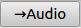
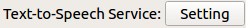
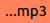
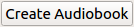

Let's make audiobooks!
In this tutorial, you're going to learn everything you need to know when you make an audiobook with Joytan. Before making a textbook, you should have passed everything you need in your upcoming book to Joytan following the steps of the previous tutorial

1. Click "Go to Audio-setting" button ()
on the welcome page to open Audio-setting window.
2. Click the button of 
to open "TTS/Preferences" and
allocate a voice to each section in an Entry.
3. In the "TTS/Preferences", set your favorite TTS voices to each section of an Entry, confirming all section to be read in your book are allocated with a voice.
{kind=link}
4. After selecting the voices, click the "OK button" below to go back to the Audio-setting window.
5. To suit your needs and taste, tune the parameters of audible items,
such as Entry's sections, sound effects (),
and rest intervals ( ).
For example, how many times do you want the text in each "atop" section
to be read?
How much rest do you want between each of audible items?
You can change these parameters in "Audio Flow" by dragging and dropping
items.
).
For example, how many times do you want the text in each "atop" section
to be read?
How much rest do you want between each of audible items?
You can change these parameters in "Audio Flow" by dragging and dropping
items.
{kind=link}
6. Arrange the looped background music (BGM) by the same way you did in the previous step. It's fascinating to set your best-loved songs as BGM!
7. Done! Click the "create button" (). After successfully Joytan finishes the process, you get "audiobook.mp3" in a folder with your project name ('joytan-sample' by default).
If you are not sure about what the final output sounds like, you can make a preview using a few of entries instead of making a full audiobook and waiting for long time until the process finishes. You can change the number of entries to use in your audiobook in the top-left corner of the Audio-setting window.
{kind=link}
That's it. Now you can create your own audiobooks, then next let's make a textbook! [-> Next Tutorial]